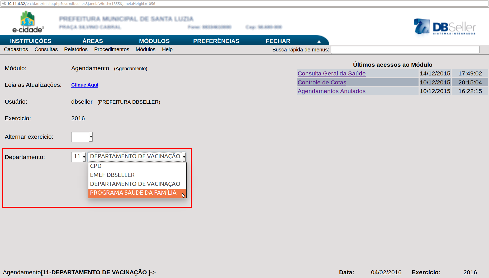

Depois de realizar todas as configurações básicas para o correto funcionamento do software e-Cidade, podemos prosseguir na sua utilização, dividida em áreas, uma das quais, a área de Saúde, será explorada com estes manuais, seguindo a mesma divisão utilizada no software, que é a de módulos.
O primeiro módulo a ser visto na Área Saúde é o Módulo Agendamento. Nessa parte do software e-Cidade é feito o gerenciamento eficiente de qualquer tarefa desempenhada por profissionais de saúde, como consultas e exames efetuados nos postos de saúde, alocando datas e horários e delegando pessoas e recursos para a execução de uma dessas tarefas.
Na ilustração, é mostrado a tela inicial do módulo, acessível a partir da Área Saúde. Atente que, para o correto funcionamento dos serviços do módulo, é necessário na tela inicial selecionar o departamento no qual os serviços serão disponibilizados.
